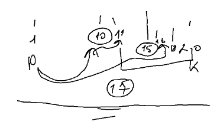

Користувач загадує натуральне число від 1 до N. Шляхом задавання мінімальної кількості запитань знайти вказане число (застосувати бінарний пошук, на кожному кроці якого інтервал пошуку зменшується на 2 шляхом порівняння з елементом, який знаходиться у центрі поточного інтервалу).
